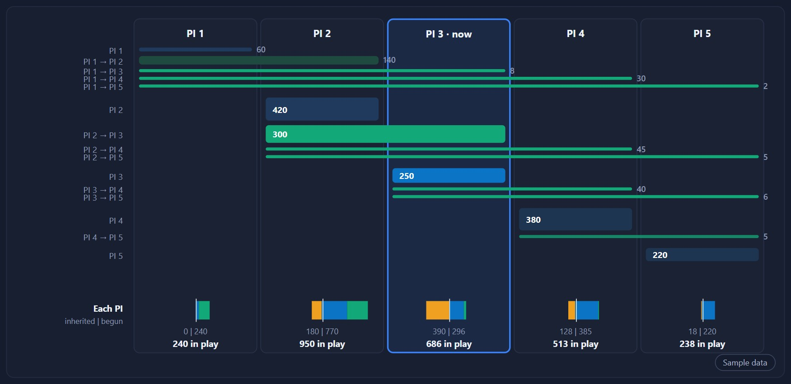
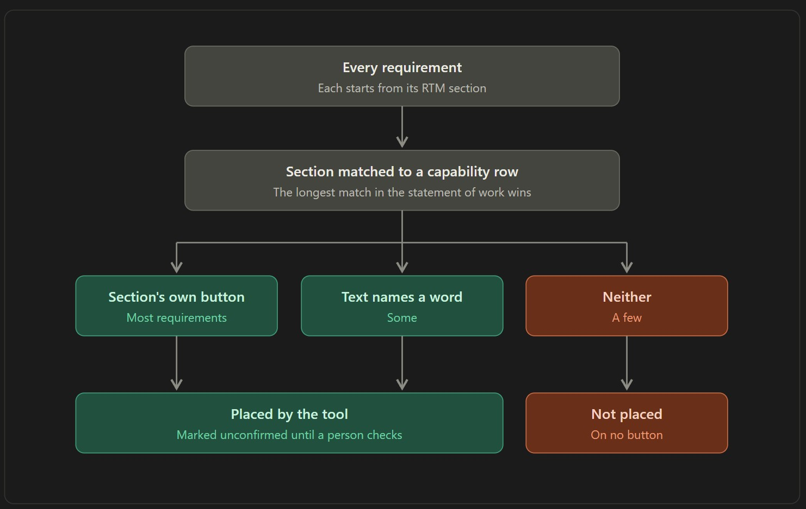

The RTM tool
A requirements traceability app for a tolling program, built by a small in-house team with AI agents. It ties each contract requirement to the epics, designs, business rules and tests that deliver it.
Who it’s forBusiness analysts, the test lead, the workstream leads and program leadership.
The problem
The contract’s requirements lived in a workbook that kept changing, and nothing could join a requirement to the work that delivers it.
- A moving workbook.The requirements workbook was revised again and again, and every version renumbered something.
- Jira could not join it.Delivery lived in ten vendors' Jira boards, which cannot tie a requirement to its epic, work and test.
- A third had no increment.About a third of the rows had no program increment assigned.
- Documents with their own numbers.Designs, business rules and comment logs arrived as Word and Excel files, each numbered its own way.
- An honest answer at every gate.Leadership needed to know, at every close-out: is this requirement covered, and by what?
Flip between before and after
What I did
I was product owner and architect of most of the platform, and the program’s AI resource.
Select a card to open it in the architecture

The architecture I added
The platform had to change every day without breaking for the people using it, on a small server. The highlighted parts are mine.
Select any box to read about it
Running servers load new code in about 30 seconds and roll back on failure. That is what made 600+ small releases in six weeks safe.
I built thisGitHub Actions signs in to AWS with short-lived credentials. No stored keys.
Shared foundationThe suite runs in parallel parts with a cached environment, and a change runs only the tests that touch what it changed. Nothing is tagged until CI is green. The full suite went from 4 min 24 to 75 seconds.
I built thisA release uploads the code itself, not a new server image. The base image is fingerprinted and rebuilt only when its dependencies change.
I built thisViews are built before a new server takes traffic, and answers are shared by roles that see the same fields. Pages show their last answer while a cold server recomputes. Nobody meets a cold start.
I built thisPer-client roles on Casbin: an inherited role tree, groups, grants, a preview of what a change will do before it is saved, and a full access history.
I built thisOne reader turns contracts, statements of work, compliance matrices, designs and rule workbooks into numbered clauses. One linker ties each to its requirement and translates old document numbers to current ones.
I built thisA dry run lists every difference from the last workbook, and a person decides each one. The round trip is exact, cell for cell.
I built thisEvery Claude call goes through one door that records who asked, for which client and feature, and what it cost. Ask the RTM answers from the program's sources, filtered by what the asker may see, and cites only the passages it found.
I built thisThe foundation the platform started from, co-built in-house.
Shared foundationPostgreSQL on AWS holds the platform's own data: users, roles, settings.
Shared foundationEach client has its own database. I moved the first client across with every row copied and counted, and took every assumed client out of the code.
I built thisWord, Excel, PowerPoint, PDF, Visio and diagrams, stored in pieces in S3 and searchable with OCR. Documents open as pages people edit and comment on.
I built thisBoard viewers clone each vendor's boards, sprints and cards into the app, with a live ticket pop-up.
Shared foundationReached only through the gateway.
Shared foundationDecisions
The calls that shaped it.
Open a decision to see why
An upload shows what will change before it writes anything.Show why
The workbook is revised often. The uploader reconciles the new file against the database first, a person decides each difference, and the round trip is exact, cell for cell.
Access changes are previewed, and a refusal says why.Show why
People from different vendors share one tool. Nobody should have to guess what they can see, and a bulk change gets a dry run first.
A new view is a switch. The view people know stays the default.Show why
The team was already working in the app, so new screens are opt-in.
Big features are planned on paper first.Show why
For the planning module: research, a gap analysis, seven open decisions, a mock-up, then a twelve-phase build plan. Code came last.
Nothing heavy runs live until it is timed at live size.Show why
Big imports stream in the background, and any heavy job is measured locally on a full-size copy before it touches the live server.
Every request names its client.Show why
No code path assumes a client, so one client's data can never leak into another's view.
What else it does
The parts people use every day without thinking about them.
How AI built it
AI removed the production bottleneck, so design decisions could ship at team speed. It did not replace the thinking.
Select a step in the loop
I decide what to build and what to cut, and write it down with the date. Every change quotes the instruction it answers.
Big features are planned on paper first: research, a gap analysis, open decisions, a mock-up, then a phased build plan.
The test names are part of the spec. They fail first, so passing means something.
Claude Code writes the code. For a stretch a second agent built while Claude wrote the tasks and reviewed every diff.
CI runs the tests that touch the change. Nothing is tagged until it is green.
I read everything an agent produces and agree with it before it ships, and I check its numbers: a reported test count once turned out to be about half.
- Most of the code is co-written.About 1,000 of the app's commits are co-authored by Claude.
- Six design documents.Written for the agents and the team to build from.
- Every change traces to a decision.My commits quote the dated instruction they answer.
What changed
From a spreadsheet nobody could keep current to a system the program plans from.
Not measured yet: adoption. The usage insight is there to produce that number.
